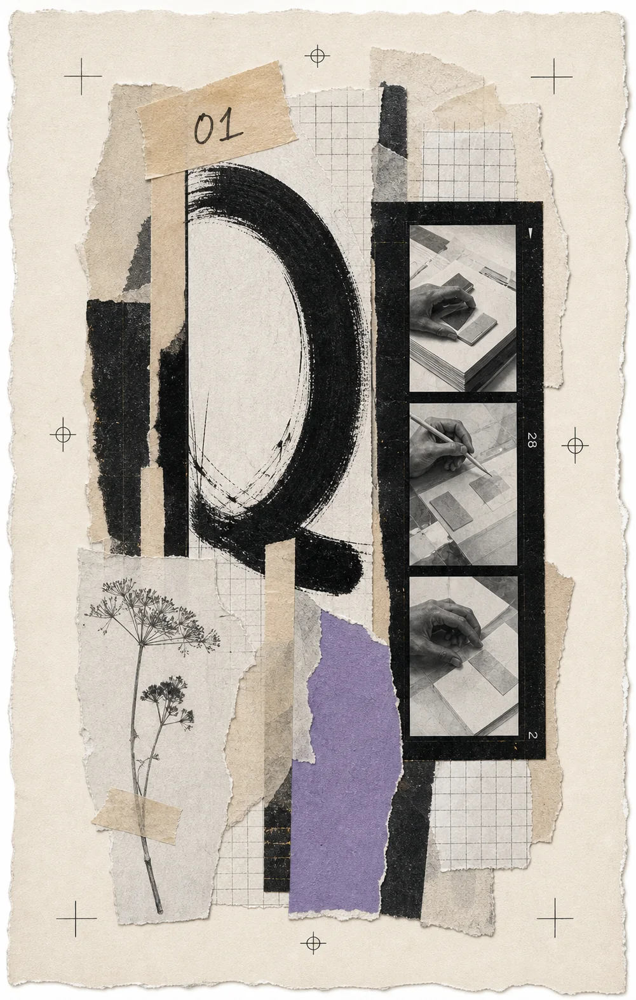

Portefólio / 2026Edição 01
Faço ideias ganharem forma.
Sou estudante de Multimédia. Trabalho entre design, imagem, movimento e tecnologia para criar experiências visuais que ficam na memória.

01 / Projetos
Trabalho com intenção.
Uma seleção em construção: só entram projetos que mostram como penso, decido e faço.
02 / Sobre
Curioso por natureza.
Multidisciplinar por escolha.
Minez / em processo
Sou Técnico de Multimédia em formação, em Portugal. Interesso-me pelo ponto em que design, imagem, movimento e tecnologia se encontram. Gosto de perceber o problema, experimentar sem medo e chegar a uma solução com personalidade — mas também com propósito.
observar, testar, melhorar, repetir.
Explorar o laboratório01
Identidade & design gráficoSistemas visuais · editorial · comunicação
02
Web design & front-endUX/UI · HTML · CSS · JavaScript
03
Vídeo & motionCaptação · montagem · animação
04
Fotografia & pós-produçãoImagem · cor · narrativa
05
3D & imagem digitalModelação · materiais · luz
03 / Laboratório
Testes, falhas
e descobertas.
O espaço onde experimento sem precisar de ter tudo resolvido.
ideias soltas, futuros possíveis.04 / Contacto
Tens uma ideia?
Vamos dar-lhe
forma.
Se tens uma oportunidade, um projeto ou apenas uma boa ideia, conta-me. Gosto de conversas que podem transformar-se em trabalho com sentido.
Enviar mensagemvamos criar algo com intenção.